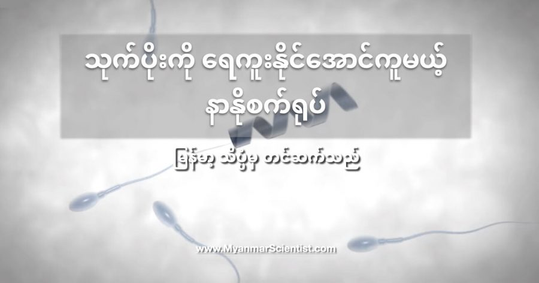

မျိုးအောင်ဖို့အတွက် သုက်ပိုးတကောင်ရဲ့ အလုပ်က သာမန်ကြည့်ရင် သိပ်ပြီး ခက်ခက်ခဲခဲ ရှိလှတာ မဟုတ်ပါဘူး။ သူ့အလုပ်က မမျိးဥဆီ အမြန်ရောက်အောင် ရေကူးပြီး မမျိုးဥနဲ့ ပေါင်းစပ်ဖို့ပဲ မဟုတ်လား။ ဒါပေမယ့် အချို့သော သူတွေမှာ သုက်ပိုးဟာ ကောင်းကောင်း ရေမကူးနိုင်တဲ့ အခြေအနေမျိုး ရှိတတ်ပါတယ်။ ဒီလို အခါမျိုးမှာ သုက်ပိုးက မမျိုးဥနဲ့ ပေါင်းစပ်နိုင်စွမ်း မရှိတော့လို့ ကလေးမရနိုင်တဲ့ အခြေအနေမျိုး ဖြစ်တတ်ပါယ်။ ဒါကို ဆေးပညာ အရ asthenozoospermia လို့ ခေါ်ပါတယ်။ ဆေးပညာရှင်တွေရဲ့ အဆိုအရ မြုံတဲ့ အမျိုးသားတွေရဲ့ ၈၀% လောက်ထိမှာ ဒီလို သုက်ပိုးရဲ့ လှုပ်ရှားမှု နှေးကွေးလေးလံ နေတာကို တွေ့ရတယ်လို့ ဆိုပါတယ်။
ဒီရောဂါနဲ့ ပါတ်သက်လို့ လက်ရှိ အချိန်မှာ ကုသနိုင်တဲ့ နည်းလမ်း မရှိသေးပါဘူး။ Intracytoplasmic sperm injection (ICSI) နည်းနဲ့ သုက်ပိုးကို မမျိုးဥထဲ တိုက်ရိုက် ထိုးသွင်းတဲ့ နည်းလမ်း ရှိပေမယ့် ကုန်ကျစားရိတ်များပြီး ခက်ခဲတာမို့ ရာနှုံးပြည့် အောင်မြင်မှုတော့ မရနိုင် သေးပါဘူး။
ဂျာမနီ နိုင်ငံက သိပ္ပံ ပညာရှင်များဟာ နာနို နည်းပညာကို အသုံးပြုထားတဲ့ စက်ရုပ် သေးသေးလေးတွေကို အသုံးပြုပြီး ရေမကူးနိုင်တဲ့ သုက်ပိုးကို ကူညီနိုင်တယ်ဆိုတာကို လက်တွေ့ သက်သေပြနိုင် ခဲ့ကြပါတယ်။ ၂၀၁၆ ခုနှစ်က Nano Letters နာနိုနည်းပညာ ဂျာနယ်မှာ သူတို့ရဲ့ သုတေသန စမ်းသပ်မှု ရလဒ်ကို တင်ပြခဲ့ပါတယ်။ ဒီစမ်းသပ်မှုကို ဂျာမနီနိုင်ငံ ဒရက်ဆဒန် မြို့က ပေါင်းစပ်နာနိုသိပ္ပံ သုတေသန ဌာန (Institute for Integrative Nanosciences at IFW Dresden) က ပညာရှင်တွေက ပြုလုပ်ခဲ့တာ ဖြစ်ပါတယ်။ ဒီပညာရှင်တွေဟာ သုက်ပိုးကောင် လေးတွေ ရေကူတာကို ကူညီဖို့ မော်တာ သေးသေး လေးတွေကို တီထွင်ခဲ့ကြတာ ဖြစ်ပါတယ်။
ဒီမော်တာ လေးတွေကို စပမ်းဘော့တ် (Spermbot) လို့ အမည်ပေးထားပါတယ်။ ဒီ စပမ်းဘော့တ်မှာ အဓိက ပါဝင်တဲ့ အစိတ်အပိုင်းကတော့ အလွန်သေးငယ်ပြီး အဏုကြည့် မှန်ဘီလူးနဲ့ ကြည့်မှ မြင်ရတဲ့ မိုက်ကရို မော်တာလေးပဲ ဖြစ်ပါတယ်။ ဒီမော်တာက တကယ်တော့ ခပ်ရှည်ရှည် ခရုပတ် ခွေလေးပါ။ ဒီအခွေလေးက သုက်ပိုးရဲ့ အမြှီးကို ပတ်ထားတာပါ။ ဒီမော်တာလေး လည်တော့ ရှေ့ကိုသွားတဲ့ တွန်းအားရတာမို့ သုက်ပိုးကလဲ ရှေ့ကို ထွက်သွားတာပါ။
ဒီမော်တောလေး သွားဖို့ လိုအပ်တဲ့ စွမ်းအင်ကိုတော့ ပြင်ပကနေ သံလိုက်အားနဲ့ သုံးပြီး လည်ပတ်စေတာ ဖြစ်ပါတယ်။ နောက်ပြီး ဒီပြင်ပ သံလိုက်လှိုင်းကပဲ ဒီမော်တာလေး သွားရမယ့် လမ်းကြောင်းကို ညွှန်ပြပေးတာပါ။ ဒီခရုပတ်ခွေလေး လည်ပြီး ရှေ့တိုးသွားတော့ သူပတ်သွားတဲ့ သုက်ပိုးကိုပါ တပါတည်း သယ်ဆောင်သွားတာ ဖြစ်ပါတယ်။
သုက်ပိုးက မမျိုးဥနဲ့ တွေ့ပြီး အတွင်းကို ဖောက်ထွင်းဝင်ရောက်သွားတဲ့ အချိန်ကျတော့ သူ့ကို ပတ်ထားတဲ့ ခရုပတ်ခွေ မော်တာလေးက အပြင်မှာ ပြုတ်ကျပြီး ကျန်ခဲ့ပါတယ်။ နောက်ပြီး အသုံးပြုတဲ့ သံလိုက်လှိုင်းကလဲ သုက်ပိုးနဲ့ မမျိုးဥတို့ကို အန္တရာယ် မဖြစ်စေနိုင်ပါဘူး။ ဒါ့ကြောင့်မို့ ဒီ နာနိုစက်ရုပ်လေးတွေကို လူ့ကိုယ်ခန္ဓာ အတွင်းက သက်ရှိဆဲလ်တွေ ကြားထဲမှာ စိတ်ချစွာ သုံးစွဲနိုင်ပါတယ်။
ဒီ စမ်းသပ်မှုကို ဓါတ်ခွဲခန်းထဲက စမ်းသပ်ခွက် (Petri dish) ထဲမှာ ပြုလုပ်ခဲ့တာ ဖြစ်ပါတယ်။ ဒီစမ်းသပ်မှု အတွင်းမှာ ကျန်းမာသန်စွမ်းတဲ့ သုက်ပိုးကို စမ်းသပ်ခွက်ထဲမှာ တနေရာက တနေရာကို ရွှေ့ပြောင်းတာကို လက်တွေ့ အောင်မြင်စွာ ပြုလုပ်နိုင်ခဲ့ ကြပါတယ်။ အောက်က ဗီဒီယိုမှာ သုက်ပိုးကို Spermbot နဲ့ ရွှေ့ပြောင်းတာကို မှတ်တမ်းတင် ထားပါတယ်။
ဒီနည်းလမ်းဟာ အခြား ဖန်ပြွန်သန္ဓေ ဖန်တီးတဲ့ နည်းလမ်းတွေနဲ့ယှဉ်ရင် အများကြီး ဈေးသက်သာနိုင်မယ်လို့ ဆိုပါတယ်။ ဖန်ပြွန်သန္ဓေက တစ်ခါပြုလုပ်ရင် ဒေါ်လာ ထောင်ချီ ကုန်ကျပြီး အောင်မြင်မှု မရမခြင်း အကြိမ်ကြ်ိမ် ပြုလုပ်ရတာပါ။
အခုထိတော့ ဒီ နာနိုနည်းပညာက ဓါတ်ခွဲခန်းအတွင်း စမ်းသပ်မှု အဆင့်မှာပဲ ရှိပါသေးတယ်။ အခုအချိန်ထိ လူတွေနဲ့ လက်တွေ့စမ်းသပ်မှုကို မပြုလုပ်ရ သေးပါဘူး။ သုတေသီတွေဟာ ဒီ နာနို စက်ရုပ်လေးတွေကို အမျိုးသမီးရဲ့ ကိုယ်ခံအားစနစ်က ဘယ်လို တုံ့ပြန်မယ် ဆိုတာနဲ့ ပါတ်သက်လို့ သေချာ မသိကြ သေးပါဘူး။ နောက်ပြီး တခါတလေလဲ ဒီစက်ရုပ်လေးတွေက သုက်ပိုးရဲ့ အမြှီးမှာ ညပ်တွေတာမျိုးတွေ ကြုံရတတ်ပါတယ်။ ဒါပေမယ့် ဒီသုတေသနတွေက နာနိုစက်ရုပ်လေးတွေ အနေနဲ့ ဘယ်လိုစွမ်းဆောင်မှုမျိုးကို ပြုလုပ်နိုင်တယ် ဆိုတာကို သက်သေ ပြနေပါတယ်။
နာနို ပညာရှင်တွေကတော့ ဒီ သုက်ပိုးစက်ရုပ် နည်းပညာကို မျိုးပွားကိစ္စမှာ ကူညီပေးဖို့တင်မက အခြားနေရာ တွေမှာလဲ အသုံးပြုနိုင်ဖို့ စမ်းသပ်ကြံဆနေ ကြပါတယ်။ အခြား စမ်းသပ်မှု တခုမှာ ဒီ နာနိုစက်ရုပ်လေးတွေကို အသုံးပြုပြီး ကင်ဆာဆေးတွေကို ကင်ဆာဆဲလ်တွေ ထဲအထိ အရောက်ပို့ဆောင်နိုင်တယ် ဆိုတာကို လက်တွေ့သရုပ်ပြနိုင်ခဲ့ကြပါတယ်။ သုတေသီတွေက သိပ်မကြာခင် အချိန်မှာ ဒီ Spermbot တွေကို တွင်တွင်ကျယ်ကျယ် လက်တွေ့ အသုံးပြုနိုင်လာကြတော့မယ်လို့ ယုံကြည်ကြပါတယ်။
References:
Watch Nanobot Carry Lazy Sperm to Fertilize Living Eggs | Interesting Engineering
New ‘Spermbots’ Could Help Solve Infertility by Acting as Bionic Suits For Sperm | Science Alert
Robotic sperm | Wikipedia
သုက်ပိုးကို ရေကူးနိုင်အောင်ကူမယ့် နာနိုစက်ရုပ်

September 24, 2021
Other Posts
- အလင်းလျင်လွန် ခရီးသွားခြင်းအတွက် အမြင်သစ်
- အာကာသတွင်းနက်ကြီး အစားခံလိုက်ရတဲ့ကြယ်
- ဘာ့ကြောင့် ချိုင်းချွေးနံ့ နံရတာလဲ
- အင်္ဂါစုံ ဒိုင်နိုဆောဥ ကျောက်ဖြစ်ရုပ်ကြွင်း ရှာတွေ့
- အိုင်းစတိုင်းရဲ့ နှိုင်းရသီအိုရီအတွက် သက်သေ အသစ်
- ထူးဆန်းတဲ့ ဂလက်ဆီ အမွှာစုံတွဲ ပဟေဠိ အဖြေပေါ်ပြီ
- ကမ္ဘာ့ဗဟိုအူတိုင် အပူချိန် ပိုမိုလျှင်မြန်စွာ အေးလာနေ
- ပျောက်ဆုံးနေသော မာယာရှေးမြို့ဟောင်း မက္ကဆီကို တောနက်ကြီးထဲတွင် ရှာတွေ့
- နာဆာက Black Hole ၂၂ ခုရဲ့ ဗီဒီယို ထုတ်ပြန်
- ကမ္ဘာမြေပုံ (World Map Download)